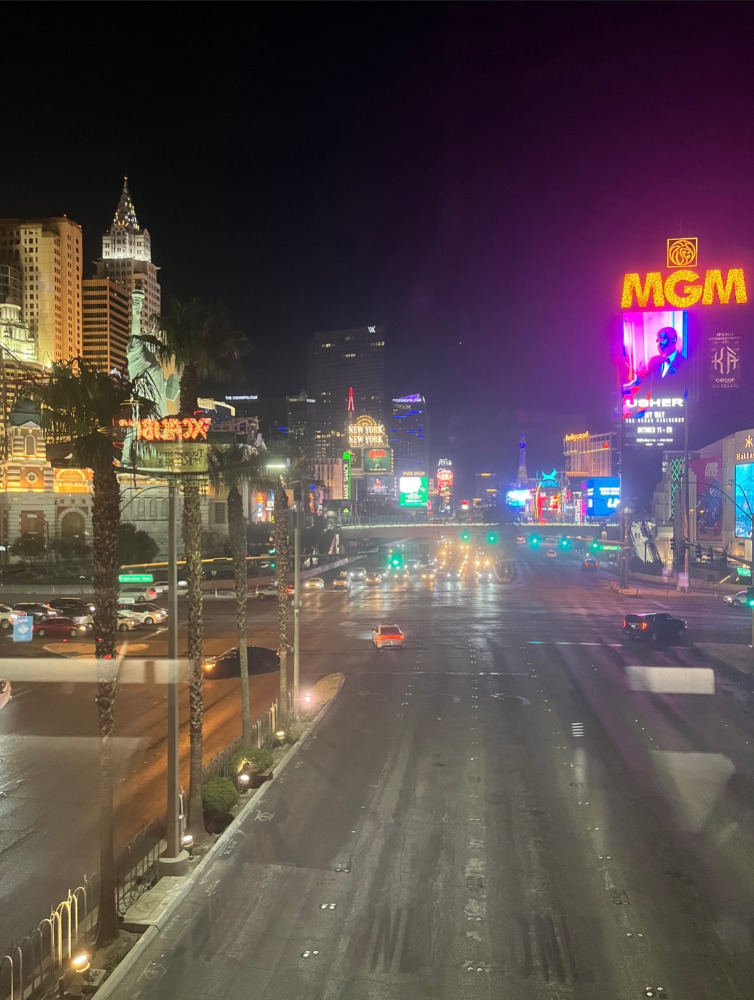
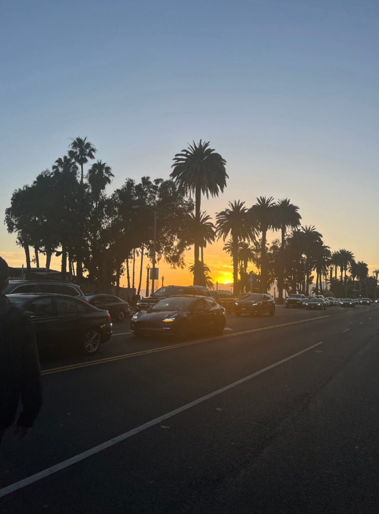
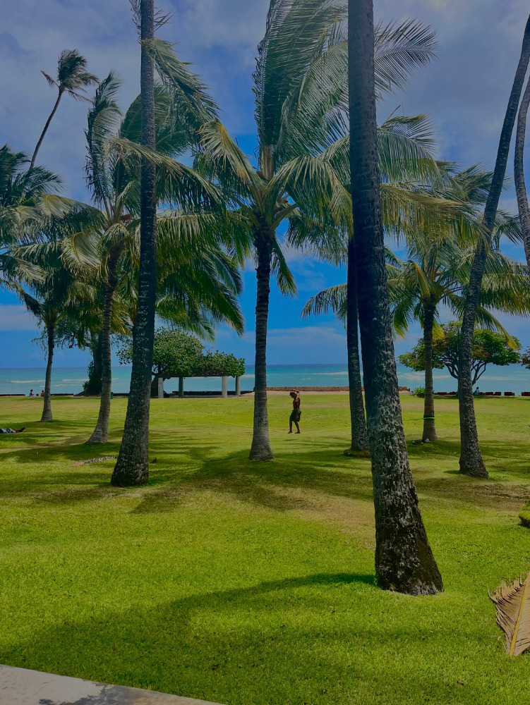
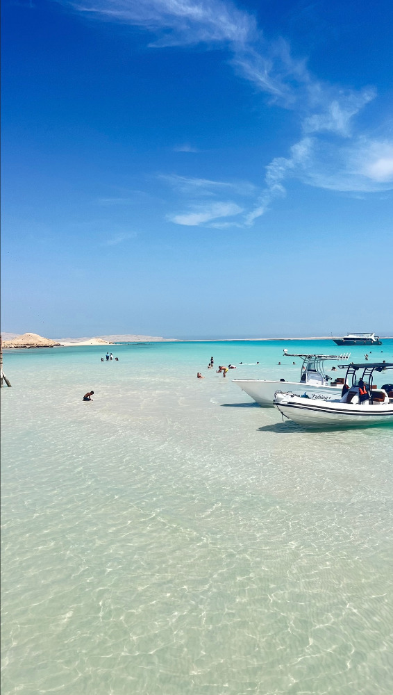
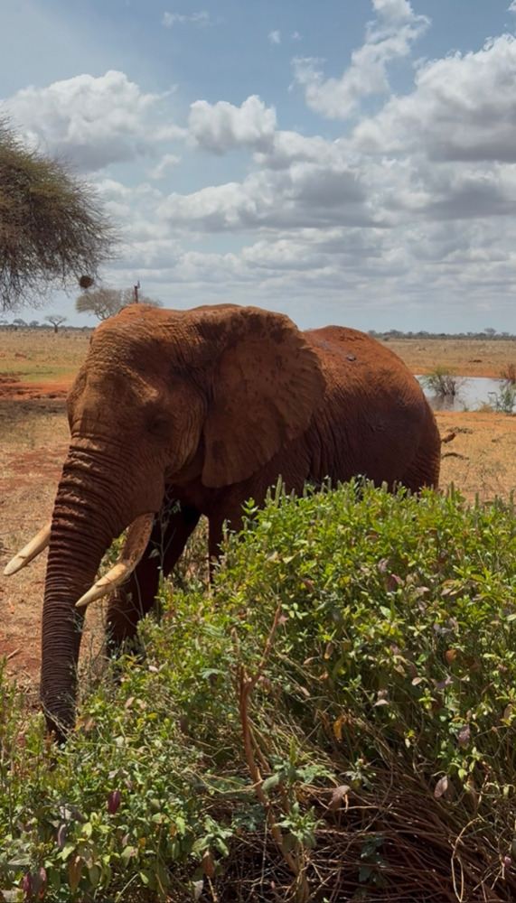
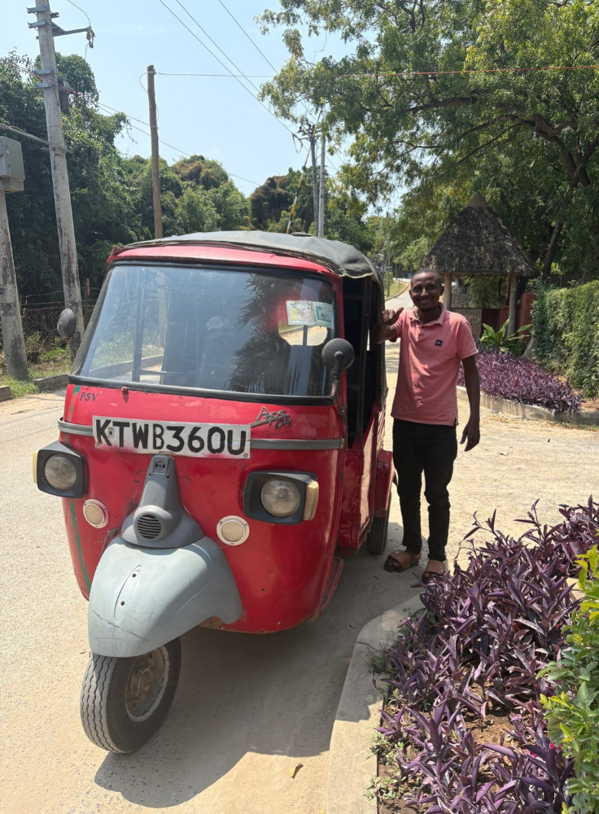

Mes
Passions
Les voyages
Voyager est une de mes plus grandes passions, parce que ça me permet de sortir de ma routine et de découvrir de nouvelles façons de vivre. J’aime l’idée d’explorer des lieux différents et d’être surprise par des cultures que je ne connais pas encore. Chaque voyage me fait grandir , m’ouvre l’esprit et me permet de voir le monde autrement. Les voyages me permettent de créer des souvenirs , de m’évader et de mieux comprendre ce que j’aime vraiment. C’est un mélange de découvertes et d’inspiration qui me pousse à vouloir continuer à explorer le monde.
Photos
de la Californie, Hawaii, l'Egypte et le Kenya






La mode
Ma deuxième passion est la mode. J'aime l'idée que chaque tenue raconte quelque chose, que ce soit une personnalité ou une inspiration. Aussi, ce qui me plait est le fait que la mode évolue tout le temps. Il y a toujours de nouvelles tendances à découvrir, des styles à réinventer et des marques inspirantes. Cela m'inspire au quotidien, que ce soit dans ma manière de m'habiller ou dans mes projets liés à la communication et au marketing. La mode me permet aussi d'être curieuse, analyser les looks, comprendre comment une marque construit son imag, observer les tendancees.... C'est une passion qui me motive énormément dans mes projets professionnels.